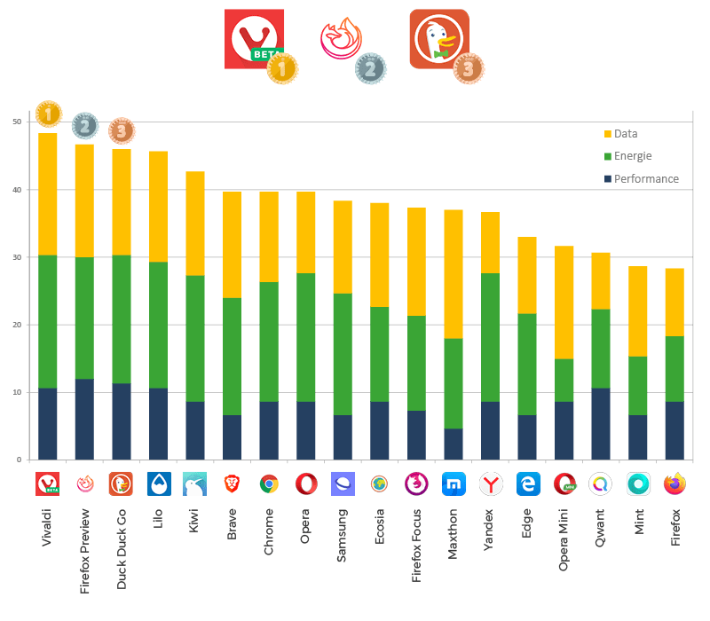
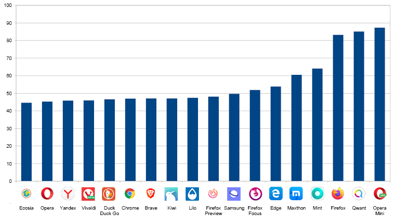
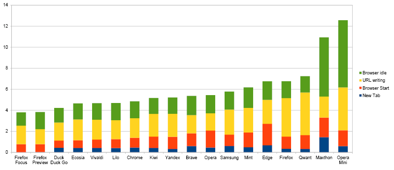
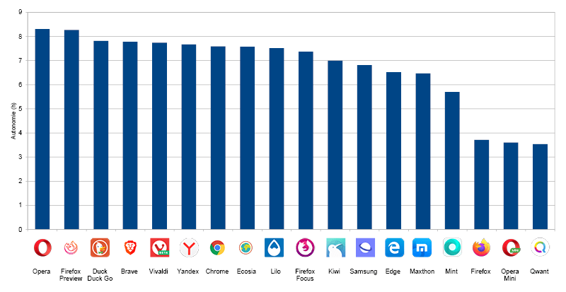
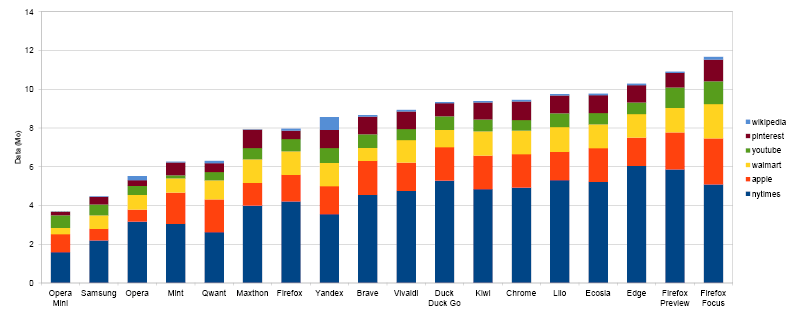
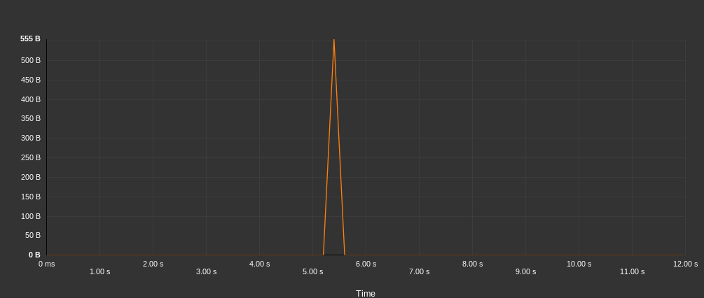
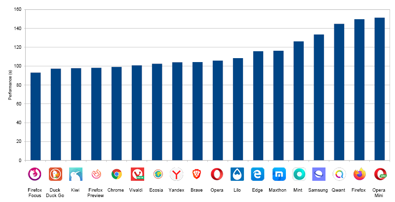
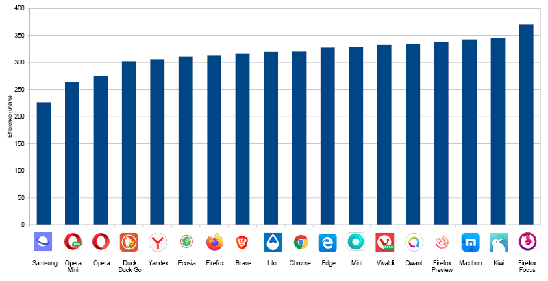
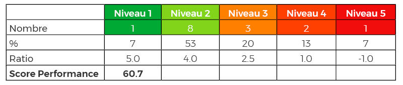

L’édition 2021 de ce classement est disponible ! Lire l’étude
Le navigateur internet est l’outil primordial sur un appareil mobile. Il est le moteur pour naviguer sur internet. Plus uniquement pour les sites web mais aussi maintenant pour les nouveaux types d’applications basées sur les technologies web (progressive web app, jeux,…).
Dans notre classement des 30 applications mobiles les plus populaires, parmi les catégories mails, messageries directes, réseaux sociaux, navigateurs, etc., la navigation web et les réseaux sociaux sont en moyenne plus consommateurs que les jeux ou les applications multimédia. Le rapport serait même de 1 pour 4 entre les applications les moins et les plus énergivores.
Diminuer l’impact environnemental de sa vie numérique ainsi qu’augmenter l’autonomie de son téléphone passent en partie par le choix d’un bon navigateur. Au même titre que si l’on souhaite réduire l’impact de son mode de transport, il est important de prendre le véhicule le plus efficient.
L’année passée nous avions publié le classement 2018 des navigateurs les moins énergivores, nous vous proposons la nouvelle édition pour 2020, plus complète, réalisée à l’aide de notre laboratoire GREENSPECTOR.

Classement global
La note sur 100 des navigateurs est la suivante :

La moyenne des notes est de 36/100 ce qui est assez médiocre. Elle s’explique par des notes basses pour chacune des métriques.
Les trois navigateurs les moins énergivores sont : Vivaldi, Firefox Preview, Duck Duck Go.
Consommation d’énergie globale (en mAh)

La médiane est de 47 mAh et une grande partie des navigateurs se situent dans cette consommation (8/18 sont dans le 2ème quartile).
À noter que les 3 derniers navigateurs dans le classement se différencient par une consommation 75 % plus élevée que la médiane. Firefox, Qwant et Opera Mini sont en effet très énergivores.
Consommation d’énergie de la navigation (en mAh)

Les 3 derniers navigateurs du classement global (Opera Mini, Firefox et Qwant) ainsi que Mint consomment énormément plus que la moyenne des autres navigateurs (entre 20 et 35 mAh contre 16 mAh).
Autant dire que pour la plupart des navigateurs (mise à part les exceptions précédentes), la navigation pure ne va pas être la raison de la différence de consommation globale. Ceci s’explique principalement sur l’usage des moteurs de visualisation. La plupart des navigateurs utilisent le moteur Chromium. Pour Opera Mini, la spécificité est qu’un proxy est utilisé et permet de compresser la taille des sites. Il semble que cela ne soit pas bon pour l’énergie, en effet la décompression sur le téléphone de l’utilisateur consomme de l’énergie.
Pour Firefox, la surconsommation d’énergie est une chose connue et partagée, c’est l’une des raisons pour laquelle Mozilla est en cours de développement d’un nouveau navigateur. Nom de code interne Fenix et public Preview. Les mesures dans ce classement sont plutôt encourageantes sur la consommation (dans la moyenne).
Pour Qwant, ceci s’explique par l’usage du moteur Firefox ! Les mesures entre Qwant et Firefox sont en effet très proches.
Consommation d’énergie des fonctionnalités (en mAh)
La fonctionnalité principale qui est la navigation sur le web nécessite d’autres fonctionnalités toutes aussi importantes : ouvrir un nouvel onglet, entrer une adresse dans la barre des tâches… À cela se rajoute la consommation d’énergie de la page d’accueil du navigateur. En effet, lorsque l’on ouvre un nouvel onglet, chaque navigateur propose des fonctionnalités différentes : sites web principalement utilisés, dernières actualités, …

Là où les navigateurs se différencient globalement peu sur la navigation pure, on observe des différences importantes dans la consommation d’énergie sur les autres fonctionnalités avec un rapport de plus de 3 (entre 4 mAh et 12 mAh).
À noter que les 3 premiers (Firefox Focus, Firefox Preview et Duck Duck Go) ont une page d’accueil simple. La consommation du navigateur en Idle (inactivité) est alors très faible. La sobriété fonctionnelle en paye les conséquences !
Les consommations lors du lancement des navigateurs sont assez similaires entre-elles. On remarque cependant que l’ouverture d’un onglet et l’écriture d’une URL sont des actions qui sont réalisées plusieurs fois. Si l’on prend une projection journalière de 30 nouveaux onglets et 10 écritures d’URL, on observe encore plus la différence entre les navigateurs et la large avance de Firefox Preview et Focus !

Les fonctionnalités de bases ne sont donc pas négligeables dans la consommation globale du parcours.
Projection d’autonomie (en nombre d’heures)
Si l’on prend ces données d’énergie et qu’on les projette pour une navigation de plusieurs sites web, on identifie le temps maximum que l’utilisateur peut naviguer jusqu’à décharge complète de sa batterie :

Consommation de données (en Mo)

La différence de consommation de données entre navigateurs (8 Mo d’écart) s’explique par la navigation pure et par les différentes fonctionnalités.

Sur la navigation, on explique cette différence :
Certaines applications ne gèrent pas du tout le cache pour des raisons de protection et de confidentialité des données (Firefox Focus) l’usage de proxy qui optimise les données (Opera Mini)une différence d’implémentation de la gestion du cache.
Il est en effet possible que certains navigateurs invalident le cache et que des données soient chargées alors qu’elles sont en cache.
Des consommations de données annexes se poursuivent en tâche de fond (idle des onglets, données en arrière-plan non bloquées…) des différences de performance de téléchargement qui viennent augmenter la durée de la mesure. En effet, si un navigateur est performant, la contrepartie est que beaucoup plus de données sont potentiellement chargées en arrière-plan.
La différence de consommation globale s’explique aussi par la consommation de données des fonctionnalités de base :

Beaucoup de navigateurs sont très consommateurs. On note les 3 Mo de Qwant qui semblent anormaux !
On peut considérer que pour les navigateurs, cette consommation doit être proche de 0. En effet, la principale fonctionnalité d’un navigateur est d’afficher une site web, toute fonctionnalité (et consommation associée) peut être considérée comme une « surconsommation ».
Dans ce cadre, beaucoup de navigateurs consomment des données lors de l’écriture de l’URL. Ceci s’explique principalement par les fonctionnalités de proposition d’URL. Il y a en effet des échanges entre le mobile et les serveurs, soit directement par le navigateur, soit par le moteur de recherche associé.

Par exemple, pour le navigateur Yandex ci-dessous, le détail des échanges de données lors de l’écriture d’une URL montre plus 400 Ko de données échangées.

À l’opposé, ci-dessous, les échanges pour Brave sont frugaux avec moins de 2 Ko.

Performance des navigateurs (en seconde)
Les mesures nous permettent d’évaluer la performance des fonctionnalités :
Lancement du navigateur
Ajout d’un onglet
Écriture d’une URL
Suppression du cache
Bench Mozilla Kraken
NB : Cette étude n’évalue pas la performance d’affichage des sites web. Par contre le Bench Mozilla Kraken le permet en partie en évaluant les fonctionnalités des navigateurs.

Efficience des navigateurs (en mAh/s)
Nous pouvons évaluer l’efficience des navigateurs en prenant la performance du bench Mozilla Kraken et l’énergie associée. L’efficience est la consommation d’énergie par unité de temps :

Samsung, Opera Mini et Opera sont les navigateurs les plus efficients. Ce classement est différent de celui de la consommation d’énergie globale. Pour Samsung Internet, cette première place en terme d’efficience sur un matériel Samsung peut s’expliquer par le lien optimisé que peut avoir le constructeur avec un logiciel pré-installé. Le navigateur Opera a un beau positionnement (2ème pour la consommation globale et 3ème pour celle de l’efficience).
Piste d’améliorations
Il est possible d’améliorer la consommation de la navigation.
Pour l’utilisateur :
Choisir un navigateur efficient
Utiliser les marques-pages ou favoris afin d’éviter de passer par la barre de saisie
Configurer les options d’économie d’énergie des navigateurs (mode ou thème sombre, data server…)
Pour les développeurs de sites :
Éco-concevoir leur site
Tester et mesurer sur différents navigateurs pour identifier des comportements différents et les prendre en compte
Pour les éditeurs de navigateurs :
Mesurer la consommation d’énergie et l’efficience
Éco-concevoir les fonctionnalités
Réduire la consommation de ressources des fonctionnalités récurrentes (écriture d’url, nouvel onglet…)
Rendre la page d’accueil la plus sobre possible.
Protocole de mesure
Les mesures ont été réalisées par le laboratoire GREENSPECTOR sur la base d’un protocole standardisé : Smartphone Samsung S7, Android 8, Wi-Fi, luminosité 50%. Entre 4 et 8 itérations ont été réalisées et la valeur retenue est la moyenne de ces mesures. Les campagnes de mesure respectent un scénario permettant d’évaluer les navigateurs dans différentes situations.
Évaluation des fonctionnalités
Lancement du navigateur
Ajout d’un onglet
Écriture d’une URL dans la barre de recherche
Suppression des onglets et nettoyage du cache
Navigation
Lancement de 6 sites et attente pendant 20 secondes pour être représentatif d’un parcours utilisateur
Benchmark navigateur
Le benchmark Mozilla Kraken permet de tester la performance JavaScript
Évaluation des périodes d’inactivité du navigateur
Au lancement (cela permet d’évaluer la page d’accueil du navigateur)
Après navigation
Après fermeture du navigateur (pour identifier des problèmes de fermeture)
Pour chaque itération, on réalise les tests suivants :
Suppression du cache et des onglets (sans mesure)
Première mesure
Deuxième mesure pour mesurer le comportement avec cache
Suppression du cache et des onglets (avec mesure)
Fermeture système du navigateur (et pas uniquement une fermeture par l’utilisateur pour s’assurer une réelle fermeture du navigateur)
La moyenne de mesure prend donc en compte une navigation avec et sans cache.
Les métriques principales analysées sont les suivantes : performance d’affichage, consommation d’énergie, échange de données. D’autres métriques telles la consommation CPU, la consommation mémoire, des données systèmes… sont mesurées mais ne seront pas affichées dans ce rapport. Contactez GREENSPECTOR pour en savoir plus.
Afin d’améliorer la stabilité des mesures, le protocole est totalement automatisé. Nous utilisons un langage abstrait de description de test GREENSPECTOR qui nous permet une automatisation poussée de ce protocole. Les configurations des navigateurs sont celles par défaut. Nous n’avons changé aucun paramètre du navigateur ou de son moteur de recherche.
Notation
Une notation sur 100 permet de classer les navigateurs entre eux. Elle se base sur la notation de 3 métriques principales :
| Métrique | Définition | Unité |
|---|---|---|
| Performance | Durée nécessaire au déroulement d’une étape de test | secondes (s) |
| Énergie | Vitesse de décharge de la batterie constatée sur l’appareil pendant le déroulement de l’étape de test, comparée à la vitesse de décharge de la batterie de l’appareil avant que l’application ne soit lancée | Mesures en uAh/s, puis classement en multiples de la vitesse de décharge de référence |
| Données | Volume de données total (émises + reçues) pendant le déroulement de l’étape de test | kilo-octets (ko) |
Un ratio de pondération est appliqué sur les 5 niveaux des steps (de 5 pour les verts foncés à -1 pour les rouges foncés) comme décrit dans le tableau exemple suivant :

Le score de cette application est alors calculé à 61/100 pour la métrique énergie.
Une fois le score de chacune des trois métriques obtenu sur 100 points, le score total de l’application est calculé avec une pondération égale des trois métriques:
Score total = ( Score Performance + Score Énergie + Score Données ) / 3
Navigateurs évalués
| Nom du navigateur | Version |
|---|---|
| Brave | 1.5.2 |
| Chrome | 78.0.3904.108 |
| Duck Duck Go | 5.32.3 |
| Ecosia | 39632 |
| Edge | 42.0.4.4052 |
| Firefox | 68.3.0 |
| Firefox Focus | 8.0.24 |
| Firefox Preview | 2.3.0 |
| Kiwi | Quadea |
| Lilo | 1.0.22 |
| Maxthon | 5.2.3.3241 |
| Mint | 37290 |
| Opera | 54.3.2672.502 |
| Opera Mini | 44.1.2254.143 |
| Qwant | 37714 |
| Samsung | 10.1.01.3 |
| Vivaldi | 2.7.1624.277 |
| Yandex | 19.10.2.116 |
Certains navigateurs ont été écartés car ne permettaient pas l’automatisation des tests. Par exemple les navigateurs UC Browser et Dolphin n’ont pas pu être mesurés. Au-delà de l’automatisation, cela est symptomatique d’un problème d’accessibilité de l’application. En effet pour améliorer l’accessibilité des applications pour les personnes avec des déficiences visuelles (entre autres), il est nécessaire de mettre en place des labels pour les boutons. L’automatisation que nous réalisons se base sur ces informations. Au final, ces navigateurs n’apparaissent pas dans le classement, mais on peut considérer que les problèmes d’accessibilité sont dans tous les cas un problème rédhibitoire.
Note : Le classement 2020 est difficilement comparable à celui de 2018. En effet, notre protocole ayant totalement évolué, les tests sont ainsi plus poussés et automatisés.
Découvrez notre dernière étude : le Playstore Efficiency Report 2019!